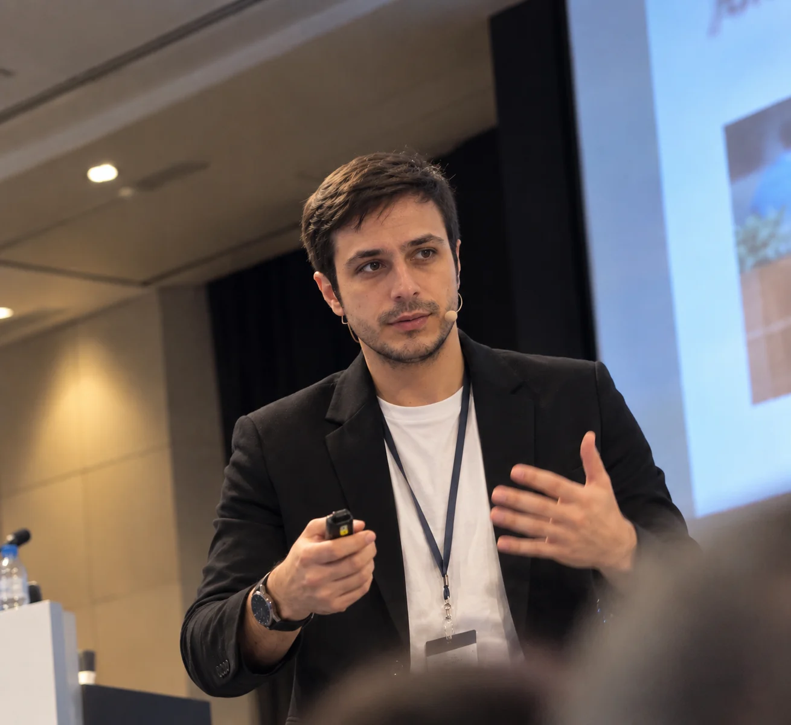

Inteligencia artificial
Formación práctica para descubrir el potencial de la IA en la docencia y llevarlo al día a día del aula.
EDUCACIÓN · TECNOLOGÍA · PERSONAS
Soy Alejandro García Asensio.
Maestro, formador y apasionado de la inteligencia artificial. Acerco la tecnología al aula para construir una educación más inclusiva.
Del aula a la innovación. Siempre con las personas en el centro.

La tecnología cambia.
La educación transforma.
01 — SOBRE MÍ
Soy un maestro enamorado de las nuevas tecnologías y de las metodologías que hacen participar a todo el alumnado.
Mi recorrido une la Educación Primaria, la Pedagogía Terapéutica y la Audición y Lenguaje. He trabajado en evaluación e intervención, creación de materiales DUA, coordinación TIC e innovación educativa.
Durante cuatro cursos formé parte del CEIP Ciudad del Mar de Torrevieja, un centro que apuesta por el aprendizaje basado en proyectos y el trabajo en equipo. Hoy sigo conectando esa experiencia de aula con la formación docente y la inteligencia artificial.
Conoce mi trayectoria ↘02 — LO QUE ME MUEVE
Cuatro áreas que se encuentran
en una misma forma de educar.
Formación práctica para descubrir el potencial de la IA en la docencia y llevarlo al día a día del aula.
Aprendizaje basado en proyectos, juegos, cooperación y gamificación para dar protagonismo al alumnado.
Audición y Lenguaje, Pedagogía Terapéutica y materiales DUA para una participación sin barreras.
Coordinación TIC, recursos educativos abiertos y creación de contenido en vídeo e imagen.
03 — TRAYECTORIA
Experiencia educativa, acompañamiento e innovación.
INTEF
Instituto Nacional de Tecnologías Educativas y de Formación del Profesorado. Departamento de digitalización, inteligencia artificial y recursos educativos abiertos.
Conselleria de Educación Valenciana
Educación Primaria, Pedagogía Terapéutica y Audición y Lenguaje en Infantil, Primaria y ESO. Experiencia en centros de Educación Especial.
Centro de Estimulación Temprana APSA
Evaluación e intervención con niños y niñas de entre 2 y 14 años.
04 — PROYECTOS Y COLABORACIONES
Mi proyecto para acercar la inteligencia artificial a los docentes: formación en centros educativos y contenido práctico en redes sociales.
Hablemos de formación ↗Autor del libro «Redefiniendo la educación: Desata el poder de ChatGPT en el aula».
Docente UNIR en el Máster de Aplicaciones de IA y tutor en EUNEIZ desde 2023 en programas de metodologías activas e IA educativa.
05 — PONENCIAS Y FORMACIÓN
Una selección de encuentros,
cursos y colaboraciones.
Colaboración en el proyecto «Inteligencia Artificial para Todos».
Tutoría «OBS y Flipped Classroom».
Tutoría «IA para Docentes, un aliado en el aula».
Colaboración en el ámbito de Audición y Lenguaje.
Participación como jurado de innovación en robótica.
06 — SEGUIR APRENDIENDO
Formación, herramientas e idiomas
que acompañan mi práctica.
Universidad Internacional de La Rioja
Mención en Educación Especial · Universidad de Granada
Castellano y valenciano · Nativo
Inglés · B2
B2 · C1 en preparación
eXeLearning · Medio-alto
CONECTEMOS
¿Una formación para tu centro, una ponencia o un proyecto educativo? Hablemos.
Escríbeme ↗alejandro@edukaitech.com+34 676 980 742